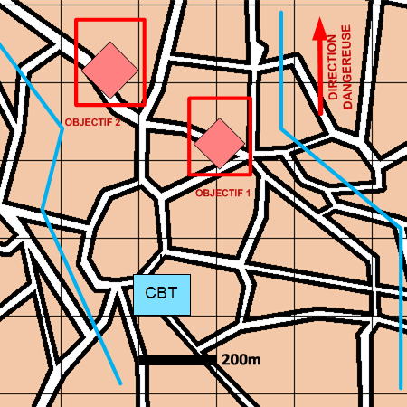

NIVEAU : Automate
ARME : Melee
MISSION : Detruire
NIVEAU : Automate
ARME : Melee
MISSION : Detruire
Schéma de modélisationDétruire |
Paramètres obligatoiresFuseauZone de responsabilité. Direction Dangereuse Orientation privilégiée des capteurs. Objectifs Agents ennemis à détruire. |
|
Paramètres optionnelsLigne de coordination [LC] |
||
 |
Fiches missions |  |